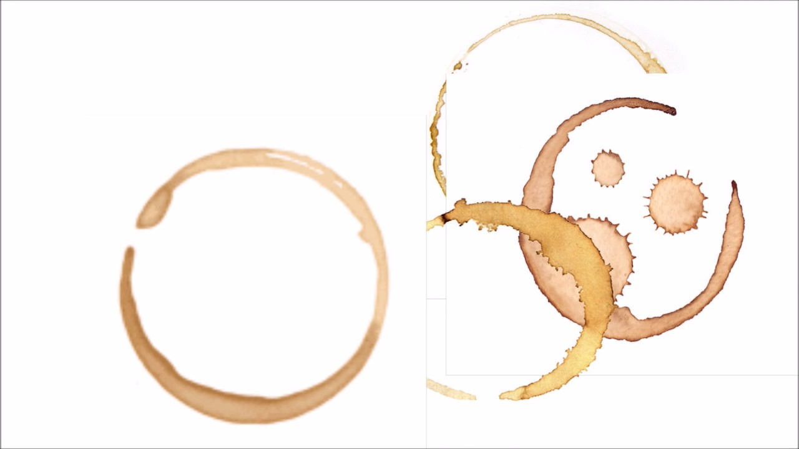

When a drop of liquid containing suspended particles dries, a characteristic ring remains on the surface instead of a uniform spot. Investigate the physics of capillary flows inside an evaporating droplet. How do the viscosity of the liquid and the chemical nature of dissolved substances (surfactants, salts) affect the sediment distribution? Propose conditions or a liquid composition under which an ideally uniform coating forms instead of a ring.

Many people have probably noticed that after a coffee droplet dries on a table, a dark ring remains along the edges rather than a uniform spot. This phenomenon is called the coffee ring effect, and it arises due to the movement of liquid inside an evaporating droplet. In this work, we will examine the physics of capillary flows, discover how liquid viscosity and dissolved substances affect particle distribution, and determine the conditions under which a uniform coating forms instead of a ring. To establish the basic definitions, the coffee ring effect is a phenomenon where particles contained in a liquid droplet accumulate along its edges after evaporation, forming a ring-like trace. Capillary flow is the movement of liquid inside a droplet that arises due to uneven evaporation. Viscosity is the property of a liquid to resist flow, meaning that the higher the viscosity, the slower the liquid moves. Surfactants are substances capable of modifying the surface tension of a liquid, and sediment refers to the solid particles remaining on a surface after the complete evaporation of the liquid. Understanding how the coffee ring effect occurs requires looking at the evaporation process, which happens unevenly. At the edges of the droplet, the contact area with the air is larger, so the liquid evaporates faster there. To replenish the loss of liquid at the edges, a flow from the center to the periphery arises inside the droplet, and suspended particles are transported along with this flow. As evaporation progresses, the particles accumulate at the edge of the droplet and form a characteristic ring, which is precisely why a dark rim most often remains after coffee or tea dries. Several factors influence the distribution of the sediment. First is the viscosity of the liquid; the higher the viscosity, the slower the internal flows, which reduces the transport of particles to the edges and promotes a more uniform distribution of sediment. Second are surfactants, which alter the surface tension of the liquid and can redirect flows inside the droplet, preventing ring formation. Third are dissolved salts, which change the density, viscosity, and evaporation rate of the liquid, either enhancing or weakening the coffee ring effect depending on their composition. Fourth is particle size, as larger particles settle faster while smaller ones are more easily transported by liquid flows. Fifth is the evaporation rate, meaning that the faster a droplet dries, the more pronounced the ring effect becomes. Regarding the influence of liquid viscosity, studies show that when liquid viscosity increases, the movement inside the droplet becomes slower. For instance, if glycerin is added to water, the capillary flows weaken, meaning particles are no longer transported to the edges as actively and distribute more evenly across the surface. Therefore, high-viscosity liquids are more likely to leave a solid spot instead of a distinct ring. Surfactants and salts also play a significant role since surfactants create additional flows inside the droplet that can direct particles back toward the center and prevent their accumulation along the edges. Salts affect sediment distribution as well; some salts alter the nature of liquid evaporation and reduce ring formation, whereas others, conversely, make it more pronounced. Because of this, the chemical composition of the solution plays a vital role in shaping the final pattern after a droplet dries. To achieve a uniform coating, it is necessary to reduce the movement of particles toward the edges of the droplet. This can be accomplished in several ways: by increasing the viscosity of the liquid using glycerin or similar additives, adding a small amount of surfactants, utilizing suitable salts that modify internal flows, decreasing the evaporation rate through higher air humidity, and avoiding intense heating of the surface. An ideal liquid composition for obtaining the most uniform coating possible involves using water with the addition of glycerin and a small amount of surfactants. Glycerin slows down the movement of the liquid, while surfactants redistribute the flows inside the droplet. Slow evaporation at room temperature further promotes the uniform deposition of particles across the entire surface, resulting in an almost solid, uniform layer instead of a ring. The study of the coffee ring effect has important practical applications for many modern technologies. This phenomenon is taken into account in the production of electronic microchips, image printing, the creation of medical tests, the application of paints and coatings, and the manufacture of solar cells and sensors. By controlling the movement of particles inside a droplet, it is possible to obtain materials with pre-engineered properties. In conclusion, the coffee ring effect occurs due to capillary flows inside an evaporating droplet. Particle distribution is influenced by liquid viscosity, surfactants, salts, and the evaporation rate. Increasing viscosity, adding surfactants, and controlling evaporation conditions make it possible to prevent ring formation and achieve a uniform coating, providing knowledge that is widely used in science, industry, and modern technologies.